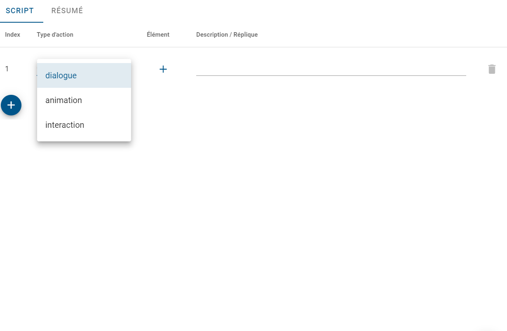
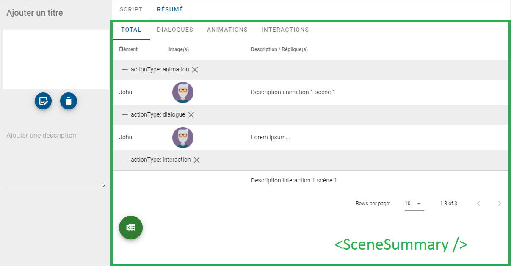
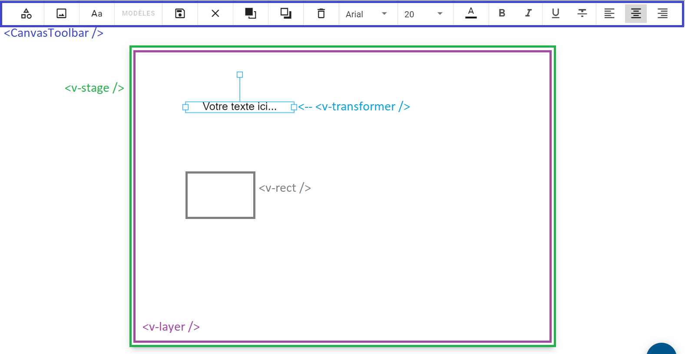

Titre professionnel développeuse web et web mobile
Emilie Anglade
Simplifier la conception des projets de formation à distance
-> un logiciel dédié qui permet de répondre aux besoins de gestion et de production des utilisateurs.
Le projet : développer un éditeur de storyboard
Le projet : développer un éditeur de storyboard
- créer un storyboard
- créer une scène,
- rédiger un script,
- créer un visuel,
- visualiser un résumé du storyboard
- exporter les données vers Excel.
| R&D | V.0 | MVP |
|---|---|---|
| structuration des données et des objets | structuration du code | refonte de l'expérience utilisateur |
| modélisation du produit | gestion de la mémoire | génération d’une présentation dynamique |
| recherche de librairies | mise en place d’un système de state management | génération d'un PDF exportable |
Mes réalisations
1. Création d’un conteneur de scènes permettant d’enregistrer les propriétés de la scène et son script

2. Création d’un éditeur de script

3. Export des données triées

4. Développement d’un outil permettant de créer une composition graphique

Et maintenant ...
-> L'accélération de croissance : stratégie de développement, recherche d'investisseurs & levée de fonds, ...
-> L'ingénierie opérationnelle: mentoring de dirigeants,assistance à maîtrise d'ouvrage, ...
Le projet : développer un un outil de rating/scoring
Le projet : développer un outil de rating/scoring
- Permettre aux startups de s’autoévaluer puis d’éditer un executive summary à envoyer à des investisseurs
- Permettre aux investisseurs de pouvoir se décider sur un one pager et une notation
- Le livrable pour la startup est un Scoring et un Executive Summary.
Mes réalisations
Création de la base de données

Poster les réponses d’un questionnaire dans la base de données
const express = require("express");
const connection = require("../db");
const router = express.Router();
router.post("/general", async (req, res) => {
try {
const { generalForm, startupId } = req.body;
const { activityArea } = req.body.generalForm;
const { startupPosition } = req.body.generalForm;
delete generalForm.activityArea;
delete generalForm.startupPosition;
const startupProfileQuery = `INSERT INTO startup_profile SET ? ON DUPLICATE KEY UPDATE ?`;
const generalFormValues = { ...generalForm, startup_id: startupId }
await connection.query(startupProfileQuery, [generalFormValues, generalFormValues]);
const activityAreaQuery = `INSERT INTO activity_area SET ? ON DUPLICATE KEY UPDATE ?;`;
const activityAreaValues = { startup_id: startupId, ...activityArea };
await connection.query(activityAreaQuery, [activityAreaValues, activityAreaValues]);
const positionQuery = `INSERT INTO position SET ? ON DUPLICATE KEY UPDATE ?;`;
const positionValues = { startup_id: startupId, ...startupPosition };
await connection.query(positionQuery, [positionValues, positionValues]);
res.sendStatus(200);
} catch (error) {
res.status(500).send(error);
}
});
module.exports = router;
Récupérer le scoring d'une start-up


const express = require("express");
const connection = require("../db");
const router = express.Router();
router.get("/:idStartup/scoring", async (req, res) => {
try {
const { idStartup } = req.params;
const [scoring] = await connection.query(
`SELECT * FROM scoring WHERE startup_id = ? ;`,
[idStartup]
);
res.status(200).json(scoring);
} catch (err) {
console.error(err);
res.status(500).send("A problem occured fetching startup profile");
}
});
Récupérer toutes les données relatives à une start-up
router.get("/:idStartup/profile", async (req, res) => {
try {
const { idStartup } = req.params;
const [
profile,
] = await connection.query(
"SELECT * FROM startup_profile WHERE startup_id = ?;",
[idStartup]
);
res.status(200).json(profile);
} catch (err) {
console.error(err);
res.status(500).send("A problem occured fetching startup profile");
}
});
router.get("/:idStartup/activities", async (req, res) => {
try {
const { idStartup } = req.params;
const [activities] = await connection.query(
`SELECT * FROM activity_area WHERE startup_id = ?;`,
[idStartup]
);
Object.keys(activities).forEach((key) => {
if (activities[key] === 0) {
delete activities[key];
}
});
delete activities.startup_id;
delete activities.id;
res.status(200).json(activities);
} catch (err) {
console.error(err);
res.status(500).send("A problem occured fetching startup activity");
}
});
router.get("/:idStartup/positions", async (req, res) => {
try {
const { idStartup } = req.params;
const [positions] = await connection.query(
`SELECT * FROM position WHERE startup_id = ?;`,
[idStartup]
);
Object.keys(positions).forEach((key) => {
if (positions[key] === 0) {
delete positions[key];
}
});
res.status(200).json(positions);
} catch (err) {
console.error(err);
res.status(500).send("A problem occured fetching startup position");
}
});